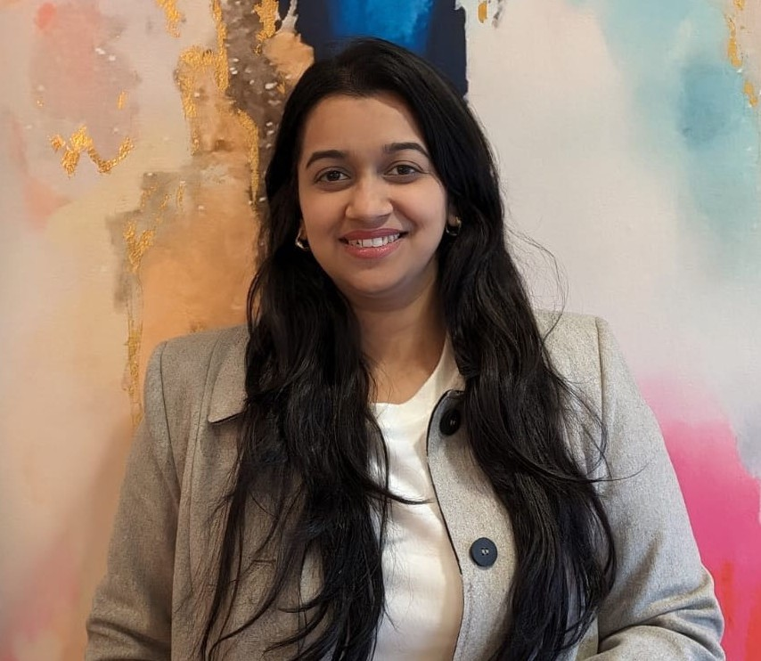

Rachna Latkar
Software Engineer | Automation Testing | Front-End Developer
About Me
Pursuing a master’s degree in computer science with 3.5 years of professional experience as a Software Engineer. Specializing in SDLC processes including design, debugging, and testing. Passionate about leveraging advanced technologies like AI, DevOps, and cloud solutions to drive innovation.
Skills and Tools
- Programming: C++, Java, Python, HTML, CSS, JavaScript, Bootstrap, SpringBoot, Angular, Junit, NodeJS
- Databases: MySQL, MongoDB, Oracle SQL
- Cloud Services: AWS, Docker
- Technologies: Artificial Intelligence, DevOps, CI/CD, RESTful APIs
Projects
- Evaluation of CPU Performance (Jan 2024 – Apr 2024): Research project comparing ARM and x86 processors using benchmarks. Technologies: Gem5 Simulation Tool, Linux OS.
- Loyalty First Inc (Sept 2023 – Dec 2023): Android-based music store application with a customer loyalty program. Technologies: Angular, RESTful Web services, Spring Boot.
- Campus Visit Feedback Hub (Jun 2023 – Aug 2023): Web app for campus visit feedback, deployed on AWS EC2. Technologies: Angular, RESTful Web services, AWS.
Work Experience
- Volunteer Web Developer - Women of Connection (WOC) (May 2024 – Present): Developed and maintained a WordPress-based website and enhanced time clock module functionality.
- Associate Software Engineer - Atos, India (Aug 2018 – May 2022): Streamlined automation with Selenium and Junit integrated with Jenkins, achieving a 20% efficiency boost. Collaborated with cross-functional teams to optimize system performance.
Contact
Email: latkarrachna@gmail.com
LinkedIn: linkedin.com/in/rachna-latkar-1b1272168
Phone: (248)-692-9441